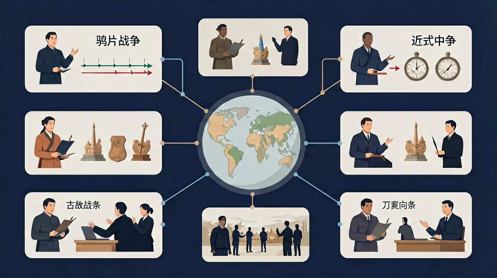

<!doctype html>
<html lang="zh-CN">
<head>
<meta charset="utf-8">
<meta name="viewport" content="width=device-width, initial-scale=1.0, viewport-fit=cover">
<title>鸦片战争与近代中国 · 高中历史 G10 · TeachAny v7.20</title>
<meta name="description" content="高中历史：鸦片战争与近代中国互动课件，对齐国家课程标准。">
<meta name="course-id" content="hist-h-opium-war-h">
<meta name="course-title" content="鸦片战争与近代中国">
<meta name="course-subject" content="history">
<meta name="course-grade" content="high-10">
<meta name="teachany-node" content="hist-h-opium-war-h">
<meta name="teachany-subject" content="history">
<meta name="teachany-grade" content="10">
<meta name="teachany-stage" content="high">
<meta name="teachany-lesson-type" content="historical-inquiry">
<meta name="teachany-version" content="7.20.0">
<meta name="teachany-template-version" content="2.1">
  <meta name="teachany-domain" content="modern-china-h">
  <meta name="teachany-prerequisites" content="古代思想文化（儒/道/法/佛）">
  <meta name="teachany-author" content="TeachAny">
<style>
*{box-sizing:border-box}html,body{margin:0}
body{background:#0f172a;color:#e2e8f0;font-family:-apple-system,"PingFang SC",sans-serif;line-height:1.8}
.slide-container{height:100dvh;overflow-y:auto;scroll-snap-type:y proximity}
.slide-page{min-height:100dvh;display:flex;flex-direction:column;justify-content:center;align-items:center;padding:24px;scroll-snap-align:start}
.slide-inner{max-width:900px;width:100%;margin:0 auto}
.slide-page[data-page-type=cover]{text-align:center;background:radial-gradient(ellipse at 30% 20%,#334155,transparent 55%)}
.slide-page[data-page-type=cover] h1{font-size:clamp(24px,4.2vw,38px);color:#93c5fd;margin:0 0 14px;font-weight:800}
.card{background:rgba(30,41,59,0.65);border:1px solid rgba(148,163,184,0.25);border-radius:12px;padding:24px;box-shadow:0 6px 24px rgba(15,23,42,.08)}
.card-accent{border-top:4px solid #60a5fa}.card-glow{box-shadow:0 6px 30px rgba(15,23,42,.18)}
.section-header{display:flex;align-items:center;gap:10px;margin-bottom:14px;flex-wrap:wrap}
.section-header h2{font-size:clamp(20px,3.6vw,24px);margin:0;color:#f1f5f9;font-weight:700}
.phase-tag{background:rgba(96,165,250,0.15);color:#93c5fd;border-radius:999px;padding:4px 12px;font-size:12px;font-weight:700}
.phase-tag[data-variant=success]{background:#dcfce7;color:#15803d}.phase-tag[data-variant=purple]{background:#ede9fe;color:#6d28d9}.phase-tag[data-variant=warn]{background:#fef3c7;color:#b45309}
.grid{display:grid;gap:10px}
.objectives{list-style:none;padding:0;margin:0;display:grid;gap:10px}
.objectives li{background:rgba(30,41,59,0.55);border:1px solid rgba(148,163,184,0.25);border-radius:12px;padding:12px 16px}
.choice{width:100%;text-align:left;border:1px solid rgba(148,163,184,0.35);border-radius:12px;background:rgba(30,41,59,0.65);color:#e2e8f0;padding:14px 18px;cursor:pointer;font-size:15px;min-height:44px}
.choice:hover{opacity:.92}.choice.correct{border-color:#22c55e;background:#dcfce7;color:#14532d}.choice.wrong{border-color:#ef4444;background:#fee2e2;color:#7f1d1d}
input,textarea{width:100%;border:1px solid rgba(148,163,184,0.35);border-radius:10px;padding:12px;font-size:15px;background:rgba(15,23,42,0.8);color:#e2e8f0;min-height:44px}
.result{padding:14px 18px;border-radius:12px;background:#dcfce7;border:1px solid #bbf7d0;margin-top:10px;color:#14532d}
.result.warn{background:#fef3c7;border-color:#fde68a;color:#78350f}
.ta-standard-figure{margin:18px auto;max-width:640px}.ta-standard-figure img{width:100%;border-radius:12px;border:1px solid rgba(148,163,184,0.25)}
.ta-standard-figure figcaption{text-align:center;color:#94a3b8;font-size:14px;margin-top:8px}
.summary-item{display:flex;gap:10px;padding:12px 16px;border:1px solid rgba(148,163,184,0.25);border-radius:12px;margin-bottom:8px}
.summary-item .num{font-weight:800;color:#60a5fa}
.subtitle{color:#93c5fd;font-size:clamp(15px,2.8vw,18px);max-width:640px;margin:0 auto}
.canvas-wrap{overflow:auto;background:rgba(30,41,59,0.55);border:1px solid rgba(148,163,184,0.25);border-radius:12px;padding:12px;min-height:120px;text-align:center;color:#94a3b8}
.phet-wrap{position:relative;padding-top:62.5%;border-radius:12px;overflow:hidden;background:rgba(30,41,59,0.55);border:1px solid rgba(148,163,184,0.25)}
.phet-wrap iframe{position:absolute;top:0;left:0;width:100%;height:100%;border:0}
.drag-pool,.drop-zone{display:flex;flex-wrap:wrap;gap:8px;min-height:56px;padding:10px;border:2px dashed rgba(148,163,184,0.4);border-radius:12px;background:rgba(30,41,59,0.65)}
.drop-zone{border-style:solid;min-height:80px;flex-direction:column;align-items:stretch}
.drag-chip{display:inline-flex;align-items:center;gap:6px;padding:10px 14px;border-radius:10px;background:rgba(51,65,85,0.8);border:2px solid rgba(148,163,184,0.4);cursor:grab;font-size:14px;touch-action:none;user-select:none;color:#e2e8f0}
.drag-chip.dragging{opacity:.55;cursor:grabbing}.drop-zone h4{margin:0 0 8px;font-size:14px;color:#f1f5f9}
.map-host{min-height:360px;border-radius:12px;overflow:hidden;border:1px solid rgba(148,163,184,0.25)}
#knowledge-graph .section-title{font-size:clamp(20px,3.6vw,24px);margin:0 0 12px;color:#f1f5f9}
#knowledge-graph [data-teachany-kg]{min-height:180px}
</style>
<link rel="stylesheet" href="https://unpkg.com/leaflet@1.9.4/dist/leaflet.css">

  <link rel="stylesheet" href="../../assets/scripts/ai-tutor.css">
  <link rel="stylesheet" href="../../assets/scripts/teachany-tutor-card.css">
  <link rel="stylesheet" href="../../assets/scripts/teachany-tts-narrator.css">
  <link rel="stylesheet" href="../../assets/scripts/teachany-section-hints.css">
  <link rel="stylesheet" href="../../assets/scripts/teachany-knowledge-graph.css">
  <link rel="stylesheet" href="../../assets/scripts/teachany-audio-player.css">
  <link rel="stylesheet" href="../../assets/scripts/teachany-floating-dock.css">
  <link rel="stylesheet" href="../../assets/scripts/teachany-historical-map.css">

<style id="ta-labeled-figure-css">
.ta-figure-labeled{position:relative}.ta-figure-wrap{position:relative}
.ta-figure-labeled img{width:100%;border-radius:12px;display:block}
.ta-figure-tags{position:absolute;inset:0;pointer-events:none}
.ta-fig-tag{position:absolute;transform:translate(-50%,-50%);background:rgba(15,23,42,.88);color:#fff;font-size:13px;font-weight:700;padding:5px 11px;border-radius:8px;white-space:nowrap;box-shadow:0 4px 12px rgba(0,0,0,.25);border:1px solid rgba(56,189,248,.35)}
</style>


<style id="histh-depth-css">
.histh-depth .worked-example{margin:16px 0;padding:16px;border-left:4px solid var(--brand,#38bdf8);background:rgba(56,189,248,.08);border-radius:0 12px 12px 0}
.histh-depth .module-check{margin-top:18px;padding:16px;border-radius:14px;background:rgba(251,146,60,.08);border:1px solid rgba(251,146,60,.28)}
.histh-depth .module-check button{display:block;width:100%;margin:8px 0;text-align:left;border:1px solid var(--line,#233);border-radius:10px;background:#0b1628;color:var(--text,#e5e7eb);padding:11px 13px;cursor:pointer}
.histh-depth .module-check button.correct{border-color:var(--ok,#22c55e);background:rgba(34,197,94,.14)}
.histh-depth .module-check button.wrong{border-color:#f87171;background:rgba(248,113,113,.12)}
.histh-depth .histh-feedback{display:none;margin-top:10px;padding:12px;border-radius:10px;background:rgba(56,189,248,.1)}
.histh-depth .histh-pitfall{margin:14px 0 0;padding:12px;border-radius:10px;background:rgba(248,180,0,.08);border:1px solid rgba(248,180,0,.24)}
</style>

</head>
<body class="teachany-high teachany-high-pro">
<nav class="teachany-page-nav" style="margin:12px auto;max-width:1080px;padding:8px 14px;display:flex;gap:14px;flex-wrap:wrap;font-size:14px;background:#f5f7fa;border-radius:10px;"><a href="#slide-container">📑 知识图谱</a><a href="#problem-anchor-choices">🤝 AI 学伴</a><a href="#learner-question-input">📚 课程内容</a></nav>


<!-- teachany-hero-notext -->

<div class="slide-container" id="slide-container">
  <section data-conceptest="true" data-scaffold="full" data-bloom-level="remember" class="slide-page" data-page-type="cover" data-page-index="0" data-tts="hero" data-tsh="开场 - 鸦片战争与近代中国">
    <div class="slide-inner"><div class="card card-glow"><h1>鸦片战争与近代中国</h1><p class="subtitle">认识列强侵华对中国社会的影响，概述晚清时期中国人民反抗外来侵略的斗争事迹，理解其性质和意义；认识社会各阶级为挽救危局所作的努力及存在的局限性。</p><figure class="ta-standard-figure" style="margin-top:28px"><section class="section" id="hero-infographic" data-bloom-level="understand" data-scaffold="full" data-tsh="知识结构主图">
<figure class="ta-standard-figure ta-figure-labeled">
  <div class="ta-figure-wrap">
    
    <div class="ta-figure-tags" aria-hidden="true"><span class="ta-fig-tag" style="top:48%;left:50%">鸦片战争与近代中国</span><span class="ta-fig-tag" style="top:18%;left:18%">概念</span><span class="ta-fig-tag" style="top:18%;left:82%">方法</span><span class="ta-fig-tag" style="top:82%;left:22%">易错</span><span class="ta-fig-tag" style="top:82%;left:78%">迁移</span></div>
  </div>
  <figcaption>无字生图 + HTML 中文叠标</figcaption>
</figure>
</section>
<section class="section teachany-upgrade-block" data-bloom-level="remember" data-scaffold="full" id="objectives"><h2>🎯 学习目标</h2><div class="tu-q"><p>🎯 能说出鸦片战争爆发的直接原因和根本原因</p></div><div class="tu-q"><p>🎯 能分析《南京条约》对中国主权的具体破坏</p></div><div class="tu-q"><p>🎯 能比较鸦片战争前后中国社会结构的变化</p></div></section>
<section class="section teachany-upgrade-block" data-bloom-level="understand" data-scaffold="full" id="anchor"><h2>🧭 带着问题学</h2><div class="tu-q"><p>❓ 为什么林则徐虎门销烟反而导致战争？</p></div><div class="tu-q"><p>❓ 英国打赢了为啥还要签不平等条约？</p></div><div class="tu-q"><p>❓ 课本说鸦片战争是中国近代史开端，凭啥不是别的事件？</p></div><p style="opacity:.85">学完这一课，这些问题你都能自信地回答。</p></section>
<section class="section teachany-upgrade-block" data-bloom-level="apply" data-scaffold="full" id="pretest"><h2>📝 前测</h2><div class="tu-q" data-answer="A"><h3>前测题 1</h3><p>英国发动鸦片战争的直接导火索是？</p><div class="tu-opts"><button type="button" class="tu-opt" data-choice="A" data-diagnosis="选B易混淆根本原因与直接原因">林则徐虎门销烟</button><button type="button" class="tu-opt" data-choice="B" data-diagnosis="选B易混淆根本原因与直接原因">清政府拒绝通商</button><button type="button" class="tu-opt" data-choice="C" data-diagnosis="选B易混淆根本原因与直接原因">英国议会投票通过</button><button type="button" class="tu-opt" data-choice="D" data-diagnosis="选B易混淆根本原因与直接原因">中国茶叶价格过高</button></div><div class="tu-fb" hidden></div></div>
<div class="tu-q" data-answer="D"><h3>前测题 2</h3><p>《南京条约》最能体现侵略本质的条款是？</p><div class="tu-opts"><button type="button" class="tu-opt" data-choice="A" data-diagnosis="选A易忽视经济主权的危害性">赔款2100万银元</button><button type="button" class="tu-opt" data-choice="B" data-diagnosis="选A易忽视经济主权的危害性">开放五处通商口岸</button><button type="button" class="tu-opt" data-choice="C" data-diagnosis="选A易忽视经济主权的危害性">割让香港岛</button><button type="button" class="tu-opt" data-choice="D" data-diagnosis="选A易忽视经济主权的危害性">协定关税</button></div><div class="tu-fb" hidden></div></div></section>
<section data-conceptest="true" data-scaffold="partial" data-bloom-level="understand" class="slide-page" data-page-type="interactive" data-page-index="1" data-tts="problem-anchor" data-tsh="问题锚点">
    <div class="slide-inner"><div class="card card-accent"><div data-scaffold="full" data-bloom-level="remember" class="section-header"><span class="phase-tag">Problem Anchor</span><h2>今天你最想弄懂哪个问题？</h2></div><div class="grid" id="problem-anchor-choices">
          <button class="choice" data-anchor-choice="鸦片战争与近代中国的核心概念是什么？">鸦片战争与近代中国的核心概念是什么？</button>
          <button class="choice" data-anchor-choice="怎样用课标要求的方法学习鸦片战争与近代中国？">怎样用课标要求的方法学习鸦片战争与近代中国？</button>
          <button class="choice" data-anchor-choice="鸦片战争与近代中国在考试或生活中如何应用？">鸦片战争与近代中国在考试或生活中如何应用？</button>
          <button class="choice" data-anchor-choice="学习鸦片战争与近代中国时我最容易错在哪里？">学习鸦片战争与近代中国时我最容易错在哪里？</button>
      </div><label style="display:block;margin-top:16px;color:#94a3b8;font-size:14px">或者写下你自己的问题<input id="learner-question-input" placeholder="把你的疑问写在这里"></label><p id="anchor-feedback" class="result warn" style="margin-top:14px">选择或输入后，这节课会围绕你的问题展开。</p></div></div>
  </section>
<section class="slide-page" data-page-type="quiz" data-page-index="2" data-tts="pretest" data-tsh="前测" id="pre-test" data-bloom-level="1" data-scaffold="full" data-conceptest="true">
    <div class="slide-inner"><div class="card card-accent"><div data-bloom-level="apply" class="section-header"><span class="phase-tag" data-variant="warn">Pretest</span><h2>课前小诊断</h2></div><p style="margin:0 0 14px">学习「鸦片战争与近代中国」时，第一步最应该做什么？</p><div class="grid" id="pre-choices">
        <button class="choice" data-correct="0">明确课标要求，建立概念框架再练习</button>
        <button class="choice">直接刷题，不用理解概念</button>
        <button class="choice">只背结论，不做情境分析</button>
      </div><p id="pre-fb" class="result warn" style="margin-top:14px">先选一个，错了正好暴露你的前概念，我们一起纠正。</p></div></div>
  </section>
<section class="slide-page" data-page-type="concept" data-page-index="3" data-tts="concept-core" data-tsh="核心 - 鸦片战争与近代中国" data-bloom-level="2" data-scaffold="full">
    <div class="slide-inner"><div class="card card-accent"><div class="section-header"><span class="phase-tag">Concept</span><h2>鸦片战争与近代中国：课标核心是什么？</h2></div><p><strong>鸦片战争与近代中国</strong>是高中历史的重要内容。认识列强侵华对中国社会的影响，概述晚清时期中国人民反抗外来侵略的斗争事迹，理解其性质和意义；认识社会各阶级为挽救危局所作的努力及存在的局限性。</p><p>通过了解明清时期封建专制的发展、世界的变化对中国的影响，认识中国社会面临的危机。</p></div></div>
  </section>
<section class="slide-page" data-page-type="concept" data-page-index="4" data-tts="example-apply" data-tsh="应用 - 鸦片战争与近代中国" data-bloom-level="3" data-scaffold="partial">
    <div class="slide-inner"><div class="card"><div class="section-header"><span class="phase-tag">Examples</span><h2>怎样学好鸦片战争与近代中国？</h2></div><p>学习路径：<strong>明确概念</strong>→<strong>掌握方法</strong>→<strong>情境练习</strong>→<strong>反思纠错</strong>。</p><p>trade were most similar to the arguments made in the early
nineteenth century by supporters of the continued use of
(A) artisanal and craft production, as opposed to the factory system
(B) mercantilist trade practices, as opposed to free trade
(C) African slave labor on sugar plantations in the Americas
(D) women’s and children’s labor in the production of luxury goods in
Chinese households
AP World History: Modern Course and Exam Description ExamInformation V.1 | 207
Return to Table of Content</p></div></div>
  </section>
<section class="slide-page" data-page-type="interactive" data-page-index="5" data-tts="map-explore" data-tsh="地图探究" data-bloom-level="3" data-scaffold="partial">
    <div class="slide-inner"><div class="card card-glow"><div class="section-header"><span class="phase-tag" data-variant="success">Map</span><h2>鸦片战争与近代中国 · 历史地图</h2></div><p style="margin:0 0 12px;color:inherit;opacity:.85">点击时代/图层按钮切换地图；悬停边界，点击城市标记查看说明。</p><div class="map-host" data-teachany-map="thm-hist-h-opium-war-h" data-teachany-map-scope="china" data-teachany-map-title="鸦片战争与近代中国 · 历史地图"><script type="application/json" data-teachany-map-config>
{
  "eras": [
    {
      "id": "era",
      "label": "清代",
      "file": "chrono-cn/019-qing-dynasty.geojson",
      "fill": "#64748b",
      "stroke": "#64748b",
      "desc": "<strong>清代</strong>：鸦片战争与近代中国相关史实地图。",
      "cities": []
    }
  ],
  "center": [
    34,
    108
  ],
  "zoom": 4,
  "fitBounds": [
    [
      18,
      72
    ],
    [
      52,
      140
    ]
  ],
  "minZoom": 2,
  "maxZoom": 8,
  "overlays": [
    {
      "id": "capitals",
      "label": "古都",
      "file": "details/capitals-extended.geojson",
      "style": {
        "color": "#a855f7",
        "radius": 4
      },
      "visible": false
    }
  ],
  "terrain": true
}
</script></div></div></div>
  </section>
<section class="slide-page" data-page-type="interactive" data-page-index="6" data-tts="drag-activity" data-tsh="互动 - 概念归类" data-bloom-level="3" data-scaffold="partial">
    <div class="slide-inner"><div class="card card-glow"><div class="section-header"><span class="phase-tag" data-variant="success">Interactive</span><h2>分一分：鸦片战争与近代中国学习要素归类</h2></div><p style="margin:0 0 12px">把卡片拖到<strong>核心概念 / 方法技能 / 应用情境 / 常见误区</strong>。</p><div class="drag-pool" id="drag-pool" aria-label="待拖动项">
        <span class="drag-chip" draggable="true" data-zone="core">📜 明确史实与时间</span>
        <span class="drag-chip" draggable="true" data-zone="method">🔗 分析因果与影响</span>
        <span class="drag-chip" draggable="true" data-zone="apply">🏛️ 联系史料得出结论</span>
        <span class="drag-chip" draggable="true" data-zone="miscon">⚠️ 以今律古或空泛议论</span>
      </div><div class="grid" style="grid-template-columns:repeat(auto-fit,minmax(160px,1fr));gap:10px;margin-top:14px">
        <div class="drop-zone" data-accept="core"><h4>核心概念</h4></div>
        <div class="drop-zone" data-accept="method"><h4>方法/技能</h4></div>
        <div class="drop-zone" data-accept="apply"><h4>应用情境</h4></div>
        <div class="drop-zone" data-accept="miscon"><h4>常见误区</h4></div>
      </div><p id="drag-readout" class="result warn" style="margin-top:12px">拖完 4 项后自动判分。</p></div></div>
  </section>
<section class="slide-page" data-page-type="concept" data-page-index="8" data-tts="knowledge-graph" data-tsh="知识图谱" data-bloom-level="2" data-scaffold="full">
    <div class="slide-inner"><div class="card card-glow"></div></div>
  </section>
<section class="slide-page" data-page-type="content" data-tsh="精讲">
  <section class="section histh-depth core-knowledge-module text-module" id="lesson-focus"
    data-bloom-level="understand" data-scaffold="full" data-tts="lesson-focus">
    <div class="card">
      <span class="phase-tag">知识精讲</span>
      <h2>鸦片战争与近代开端</h2>
      <p>鸦片战争因英国打开中国市场与走私鸦片等矛盾爆发，中国战败签订《南京条约》等，主权受损，开始沦为半殖民地半封建社会。它标志着中国近代史的开端，促使部分士人开眼看世界。</p>
    </div>
  </section>
<section class="slide-page" data-page-type="content" data-tsh="方法范例">
  <section class="section histh-depth core-knowledge-module text-module" id="lesson-method"
    data-bloom-level="apply" data-scaffold="partial" data-tts="lesson-method">
    <div class="card">
      <span class="phase-tag">方法与范例</span>
      <h2>方法：因果—条约—社会性质</h2>
      <p>分析根本原因（工业革命后的扩张）与直接原因（鸦片与禁烟）。列条约内容对应破坏的主权。点明社会性质变化与“开端”含义。</p>
      <div class="worked-example"><strong>范例：</strong>《南京条约》割香港岛、赔款、五口通商、协定关税等，破坏领土与关税主权。</div>
      <p id="lesson-pitfall" class="histh-pitfall"><strong>常见误区：</strong>常见误区是只谈禁烟细节而忽视工业革命后世界格局对中国的冲击。</p>
      <div class="module-check" data-conceptest="true">
        <h3>马上练：辨析要点</h3>
        <p>中国近代史开端的标志通常是？</p>
        <button type="button" data-correct="0" onclick="histhDepthCheck(this,false,&#x27;histh-depth-feedback&#x27;,&quot;鸦片战争是中国近代史的开端。&quot;)">A. 戊戌变法</button><button type="button" data-correct="1" onclick="histhDepthCheck(this,true,&#x27;histh-depth-feedback&#x27;,&quot;鸦片战争是中国近代史的开端。&quot;)">B. 鸦片战争</button><button type="button" data-correct="0" onclick="histhDepthCheck(this,false,&#x27;histh-depth-feedback&#x27;,&quot;鸦片战争是中国近代史的开端。&quot;)">C. 辛亥革命</button><button type="button" data-correct="0" onclick="histhDepthCheck(this,false,&#x27;histh-depth-feedback&#x27;,&quot;鸦片战争是中国近代史的开端。&quot;)">D. 五四运动</button>
        <div class="histh-feedback" id="histh-depth-feedback" role="status"></div>
      </div>
    </div>
  </section>
<section class="section teachany-upgrade-block" data-bloom-level="understand" data-scaffold="partial" id="module-1"><h2>📖 战火为何燃</h2><div class="tu-q"><p><strong>And：</strong>学生知道鸦片战争是近代史开端</p><p><strong>But：</strong>不理解英国为何非要发动这场战争</p><p><strong>Therefore：</strong>揭示列强侵略本质与清廷危机</p></div><div class="tu-q"><p>核心是贸易逆差与殖民扩张。英国对华贸易长期逆差，每年流失白银300万两（1830年数据）。为扭转局面，英国走私鸦片导致中国白银外流，林则徐虎门销烟2.3万箱成为导火索。例如1840年英国议会投票，271票对262票通过战争拨款，仅9票之差说明本质是经济掠夺。</p></div><div class="tu-q"><p>🌍 就像现在某国对华芯片封锁，表面是技术安全，实则是遏制发展。当年英国借口'自由贸易'，实为强迫中国接受鸦片贸易。</p></div><div class="tu-q" data-answer="A"><h3>🏋️ 即练</h3><p>英国发动鸦片战争的根本目的是？</p><div class="tu-opts"><button type="button" class="tu-opt" data-choice="A" data-diagnosis="选B混淆直接原因与根本目的，选C/D未认清殖民侵略本质">A.打开中国市场掠夺原料</button><button type="button" class="tu-opt" data-choice="B" data-diagnosis="选B混淆直接原因与根本目的，选C/D未认清殖民侵略本质">B.报复林则徐禁烟</button><button type="button" class="tu-opt" data-choice="C" data-diagnosis="选B混淆直接原因与根本目的，选C/D未认清殖民侵略本质">C.传播基督教文明</button><button type="button" class="tu-opt" data-choice="D" data-diagnosis="选B混淆直接原因与根本目的，选C/D未认清殖民侵略本质">D.帮助中国现代化</button></div><div class="tu-fb" hidden></div></div></section>
<section class="ta-standard-section" id="teachany-ai-tutor-card">
  <div data-teachany-tutor-card></div>
</section>
<section class="section teachany-upgrade-block" data-bloom-level="analyze" data-scaffold="partial" id="deep-understanding"><h2>🔍 深层理解：五镜头</h2><div class="tu-q"><h3>🔧拆开它</h3><p>将战争原因拆为经济（白银外流）、政治（治外法权）、文化（贸易观念冲突）三层面</p></div><div class="tu-q"><h3>💡解释它</h3><p>用'贸易逆差→鸦片输入→禁烟运动→军事报复'链条解释战争必然性</p></div><div class="tu-q"><h3>⚖️比较它</h3><p>对比中英海军装备：木质帆船vs蒸汽战舰，射程200米vs2000米</p></div><div class="tu-q"><h3>👁️看见它</h3><p>观察《时局图》动物象征：熊（俄）、犬（英）、蛙（法）瓜分中国</p></div><div class="tu-q"><h3>🚀迁移它</h3><p>联系现代国际贸易规则：关税自主权对发展中国家的重要性</p></div></section>
<section class="slide-page" data-page-index="9" data-page-type="concept" data-tsh="AI 多模态互动"><section class="section" data-tts="ai-media" id="ai-media-zone">
<div class="card card-glow"><h2>🎨 AI 多模态互动</h2>
<p>复制提示词到 AI 学伴，生成「鸦片战争与近代中国」的时间轴或事件提纲；也可以上传你手绘的示意图，请 AI 学伴点评。</p>
<textarea id="ai-prompt-box" rows="3" style="width:100%">请用表格总结「鸦片战争与近代中国」的背景、经过、影响，并给出一条时间轴和一个易混点辨析。</textarea>
<button class="choice" id="copy-ai-prompt" type="button">📋 复制提示词</button>
<p class="feedback" id="ai-zone-feedback">复制后可粘贴到 AI 学伴继续对话。</p>
</div>
<script>(function(){var b=document.getElementById('copy-ai-prompt');if(!b)return;b.addEventListener('click',function(){var t=document.getElementById('ai-prompt-box');if(!t)return;t.focus();t.select();try{document.execCommand('copy');}catch(e){}if(navigator.clipboard&&navigator.clipboard.writeText)navigator.clipboard.writeText(t.value);var f=document.getElementById('ai-zone-feedback');if(f)f.textContent='✅ 已复制，去 AI 学伴粘贴吧';});})();</script>
</section>
<section class="section teachany-upgrade-block" data-interactive="conceptest" data-conceptest="true" data-bloom-level="understand" data-scaffold="full"><h2>💡 概念检测（互动）</h2><p>历史学者茅海建指出：&quot;鸦片战争前中英冲突本质是____&quot;</p><div class="tu-opts tu-concept">
<button type="button" class="tu-opt" data-choice="A" data-correct="true" data-diagnosis="正确把握生产力差异">A. 工业文明与农业文明的碰撞</button>
<button type="button" class="tu-opt" data-choice="B" data-correct="false" data-diagnosis="文化非主要矛盾">B. 基督教与儒家的文化冲突</button>
<button type="button" class="tu-opt" data-choice="C" data-correct="false" data-diagnosis="未触及经济根源">C. 殖民者与反侵略者的对抗</button>
<button type="button" class="tu-opt" data-choice="D" data-correct="false" data-diagnosis="当时中国非典型封建社会">D. 资本主义与封建主义的斗争</button>
</div><div class="tu-fb" hidden></div></section>
<section class="section teachany-upgrade-block" data-interactive="inquiry" data-bloom-level="create" data-scaffold="partial"><h2>🔬 茶叶、白银与鸦片三角贸易</h2><p>分析1781-1840年英国东印度公司贸易数据表</p><div class="tu-inquiry"><label>💡 我的假设<textarea data-inq="h" placeholder="白银流向与鸦片输入量的相关性"></textarea></label><label>📊 我的证据<textarea data-inq="e" placeholder="1830年代英国对华鸦片出口量激增400%"></textarea></label><label>✅ 我的结论<textarea data-inq="c" placeholder="鸦片贸易是英国平衡逆差的手段"></textarea></label></div><button type="button" class="tu-save">保存探究记录（本机）</button><div class="tu-fb" data-inq-fb hidden></div></section>
<section class="slide-page" data-page-type="quiz" data-page-index="7" data-tts="posttest" data-tsh="后测" id="post-test" data-bloom-level="3" data-scaffold="none" data-conceptest="true">
    <div class="slide-inner"><div class="card"><div class="section-header"><span class="phase-tag" data-variant="warn">Posttest</span><h2>达标检测</h2></div><p style="margin:0 0 12px">关于鸦片战争与近代中国的学习，哪种做法最科学？</p><div class="grid" id="post-choices">
        <button class="choice" data-correct="0">理解课标概念，掌握方法，在情境中练习并反思</button>
        <button class="choice">只背答案，不做分析</button>
        <button class="choice">忽略课标，凭感觉答题</button>
      </div><p id="post-fb" class="result" style="margin-top:12px">选一个并查看反馈。</p></div></div>
  </section>
<section class="section teachany-upgrade-block" data-bloom-level="evaluate" data-scaffold="partial"><h2>📝 真题练习</h2><p style="opacity:.85;margin-bottom:12px">先独立作答，再点选项查看对错与错因。</p>
<div class="tu-q" data-answer="B">
<h3>选择题 1</h3><p>英国议会档案显示：1781-1790年，中英贸易逆差达2000万两白银。这种状况直接导致英国</p><div class="tu-opts">
<button type="button" class="tu-opt" data-choice="A" data-diagnosis="1793年马戛尔尼使团已尝试过">A. 要求清政府开放更多通商口岸</button>
<button type="button" class="tu-opt" data-choice="B" data-diagnosis="贸易逆差使英国选择鸦片走私扭转白银外流">B. 向中国大规模走私鸦片</button>
<button type="button" class="tu-opt" data-choice="C" data-diagnosis="这是1793年的外交手段">C. 派马戛尔尼使团请求增开商埠</button>
<button type="button" class="tu-opt" data-choice="D" data-diagnosis="战争是1839年后的选择">D. 发动第一次鸦片战争</button>
</div><div class="tu-fb" hidden></div></div>
<div class="tu-q" data-answer="B">
<h3>选择题 2</h3><p>林则徐在虎门销烟时，特别要求外商签署&quot;永不夹带鸦片&quot;保证书，这反映清政府当时</p><div class="tu-opts">
<button type="button" class="tu-opt" data-choice="A" data-diagnosis="销烟本身就是反鸦片">A. 承认鸦片贸易合法性</button>
<button type="button" class="tu-opt" data-choice="B" data-diagnosis="体现清政府希望通过外交文书解决问题">B. 试图用法律手段禁烟</button>
<button type="button" class="tu-opt" data-choice="C" data-diagnosis="战备是1840年后的事">C. 已做好战争准备</button>
<button type="button" class="tu-opt" data-choice="D" data-diagnosis="坚持朝贡体系">D. 接受英国贸易规则</button>
</div><div class="tu-fb" hidden></div></div>
<div class="tu-q" data-answer="C">
<h3>选择题 3</h3><p>《南京条约》规定&quot;英商进出口货物缴纳的税款，中国须与英国商定&quot;，破坏了中国</p><div class="tu-opts">
<button type="button" class="tu-opt" data-choice="A" data-diagnosis="涉及香港岛割让">A. 领土完整</button>
<button type="button" class="tu-opt" data-choice="B" data-diagnosis="领事裁判权破坏司法">B. 司法独立</button>
<button type="button" class="tu-opt" data-choice="C" data-diagnosis="条约使中国丧失自主制定关税权力">C. 关税自主权</button>
<button type="button" class="tu-opt" data-choice="D" data-diagnosis="内河航行权在天津条约">D. 内河航行权</button>
</div><div class="tu-fb" hidden></div></div>
<div class="tu-fill"><h3>填空题 1</h3><p>鸦片战争后，中国社会性质开始从____社会逐步沦为____社会。</p><details><summary>查看答案与解析</summary><p><strong>答案：</strong>封建,半殖民地半封建</p><p>战争使中国主权遭破坏但保留封建制度</p></details></div>
<div class="tu-fill"><h3>填空题 2</h3><p>1843年《____》规定英国获得领事裁判权，破坏了中国的司法主权。</p><details><summary>查看答案与解析</summary><p><strong>答案：</strong>虎门条约</p><p>南京条约的补充条款</p></details></div>
</section>
<section class="section teachany-upgrade-block" data-bloom-level="analyze" data-scaffold="partial" id="error-clinic"><h2>⚠️ 易错点诊所</h2><div class="tu-q"><h3>❌ 认为林则徐禁烟是战争根本原因</h3><p>✅ 根本原因是英国要打开中国市场</p><p>💡 混淆直接原因（禁烟）与根本原因（殖民扩张）</p></div><div class="tu-q"><h3>❌ 觉得《南京条约》只影响沿海</h3><p>✅ 协定关税使全国手工业受冲击</p><p>💡 忽视经济条款的全局性影响</p></div></section>
<section class="section teachany-upgrade-block" data-bloom-level="remember" data-scaffold="full" id="memory-anchor"><h2>🧠 记忆锚点</h2><div class="tu-q"><p><strong>口诀：</strong>白银外流国库空，虎门销烟惹兵锋，南京条约开口岸，近代历史此不同</p><p><strong>类比：</strong>像小区突然闯进强盗，不仅抢走快递（赔款），还逼你永远给他留专用快递柜（租界）</p></div></section>
<section class="section teachany-upgrade-block" data-bloom-level="evaluate" data-scaffold="partial" id="posttest"><h2>✅ 后测</h2><div class="tu-q" data-answer="C"><h3>后测题 1</h3><p>（真题）下列最能说明鸦片战争使中国开始沦为半殖民地的是？</p><div class="tu-opts"><button type="button" class="tu-opt" data-choice="A" data-diagnosis="选B未触及'半殖民地'的经济特征">自然经济开始解体</button><button type="button" class="tu-opt" data-choice="B" data-diagnosis="选B未触及'半殖民地'的经济特征">领土完整遭破坏</button><button type="button" class="tu-opt" data-choice="C" data-diagnosis="选B未触及'半殖民地'的经济特征">关税自主权丧失</button><button type="button" class="tu-opt" data-choice="D" data-diagnosis="选B未触及'半殖民地'的经济特征">社会矛盾变化</button></div><div class="tu-fb" hidden></div></div>
<div class="tu-q" data-answer="D"><h3>后测题 2</h3><p>（迁移）若现代某国被迫接受他国'最惠国待遇'，类似《南京条约》哪条？</p><div class="tu-opts"><button type="button" class="tu-opt" data-choice="A" data-diagnosis="选C混淆不同经济条款">割地</button><button type="button" class="tu-opt" data-choice="B" data-diagnosis="选C混淆不同经济条款">赔款</button><button type="button" class="tu-opt" data-choice="C" data-diagnosis="选C混淆不同经济条款">协定关税</button><button type="button" class="tu-opt" data-choice="D" data-diagnosis="选C混淆不同经济条款">片面最惠国待遇</button></div><div class="tu-fb" hidden></div></div>
<div class="tu-q" data-answer="C"><h3>后测题 3</h3><p>（情境）英国商人1843年在广州犯法，应依据？</p><div class="tu-opts"><button type="button" class="tu-opt" data-choice="A" data-diagnosis="选A忽视领事裁判权">《大清律例》</button><button type="button" class="tu-opt" data-choice="B" data-diagnosis="选A忽视领事裁判权">中英协商处理</button><button type="button" class="tu-opt" data-choice="C" data-diagnosis="选A忽视领事裁判权">英国法律</button><button type="button" class="tu-opt" data-choice="D" data-diagnosis="选A忽视领事裁判权">国际法庭裁决</button></div><div class="tu-fb" hidden></div></div></section>
<section class="section teachany-upgrade-block" data-bloom-level="understand" data-scaffold="full" id="course-nav-map">
<h2>🗺️ 课程导览图</h2>
<p style="opacity:.85">点击节点跳转到对应章节；可切换布局。</p>
<div style="text-align:center;margin:10px 0;">
  <canvas id="navMapCanvas" width="640" height="380" style="max-width:100%;background:rgba(15,23,42,.5);border-radius:14px;touch-action:manipulation;"></canvas>
</div>
<div style="display:flex;gap:10px;justify-content:center;flex-wrap:wrap;">
  <button type="button" class="tu-opt" id="navLayoutRing">⭕ 环形布局</button>
  <button type="button" class="tu-opt" id="navLayoutList">📜 纵向布局</button>
</div>
</section>
<section class="section" id="knowledge-graph" style="max-width:1080px;margin:24px auto;padding:0 20px;">
  <h2 class="section-title">🗺️ 知识图谱：鸦片战争与近代中国 — 鸦片战争与近代中国</h2>
  <div data-teachany-kg="hist-h-opium-war-h">
    <canvas class="tkg-fallback-canvas" width="720" height="120" aria-label="知识图谱互动画布" style="display:block;width:100%;max-height:140px;border-radius:12px;"></canvas>
  </div>
</section>
<script>
(function(){
  var cv = document.getElementById('navMapCanvas');
  if (!cv) return;
  var ctx = cv.getContext('2d');
  var nodes = window.__NAV_NODES__ || [];
  var layout = 'ring', hotspots = [];
  function compute(){
    var W = cv.width, H = cv.height, n = nodes.length, i, pts = [];
    if (layout === 'ring') {
      var cx = W/2, cy = H/2, r = Math.min(W, H)/2 - 70;
      for (i = 0; i < n; i++) {
        var a = -Math.PI/2 + i * 2*Math.PI/n;
        pts.push([cx + r*Math.cos(a), cy + r*Math.sin(a)]);
      }
    } else {
      var cols = n > 6 ? 2 : 1, per = Math.ceil(n/cols);
      for (i = 0; i < n; i++) {
        var c = Math.floor(i/per), row = i%per;
        pts.push([W*(c?0.72:0.28), 60 + row*(H-100)/Math.max(1,per-1)]);
      }
    }
    return pts;
  }
  function draw(){
    var W = cv.width, H = cv.height;
    ctx.clearRect(0,0,W,H);
    var pts = compute();
    hotspots = [];
    ctx.strokeStyle = 'rgba(96,165,250,.45)'; ctx.lineWidth = 2;
    for (var i = 1; i < pts.length; i++) {
      ctx.beginPath(); ctx.moveTo(pts[i-1][0], pts[i-1][1]); ctx.lineTo(pts[i][0], pts[i][1]); ctx.stroke();
    }
    for (i = 0; i < pts.length; i++) {
      var x = pts[i][0], y = pts[i][1], nd = nodes[i];
      ctx.beginPath(); ctx.arc(x, y, 30, 0, Math.PI*2);
      ctx.fillStyle = nd.color; ctx.fill();
      ctx.strokeStyle = 'rgba(255,255,255,.6)'; ctx.lineWidth = 2; ctx.stroke();
      ctx.fillStyle = '#fff'; ctx.font = 'bold 13px "PingFang SC",sans-serif'; ctx.textAlign = 'center';
      ctx.fillText(nd.icon, x, y - 2);
      ctx.font = '12px "PingFang SC",sans-serif';
      ctx.fillText(nd.label.length > 6 ? nd.label.slice(0,6) : nd.label, x, y + 14);
      hotspots.push({x:x, y:y, r:34, target:nd.target});
    }
  }
  cv.addEventListener('click', function(e){
    var rect = cv.getBoundingClientRect();
    var mx = (e.clientX - rect.left) * (cv.width / rect.width);
    var my = (e.clientY - rect.top) * (cv.height / rect.height);
    for (var i = 0; i < hotspots.length; i++) {
      var h = hotspots[i], dx = mx - h.x, dy = my - h.y;
      if (dx*dx + dy*dy <= h.r*h.r) {
        var el = document.getElementById(h.target);
        if (el) el.scrollIntoView({behavior:'smooth', block:'start'});
        return;
      }
    }
  });
  document.getElementById('navLayoutRing').addEventListener('click', function(){ layout = 'ring'; draw(); });
  document.getElementById('navLayoutList').addEventListener('click', function(){ layout = 'list'; draw(); });
  draw();
})();
</script>

<script>const knowledgeGraphData={"prerequisites": [], "current": {"id": "hist-h-opium-war-h", "name": "鸦片战争与近代中国", "status": "active"}, "extends": []};
// auto-injected standard graph data</script>

<script id="histh-depth-js">
function histhDepthCheck(button, isCorrect, feedbackId, explanation) {
  var box = button.closest('.module-check');
  if (!box || box.dataset.answered) return;
  box.dataset.answered = '1';
  box.querySelectorAll('button').forEach(function (item) {
    item.disabled = true;
    if (item.dataset.correct === '1') item.classList.add('correct');
  });
  if (!isCorrect) button.classList.add('wrong');
  var feedback = document.getElementById(feedbackId);
  if (feedback) {
    feedback.style.display = 'block';
    feedback.textContent = (isCorrect ? '正确。' : '再想想。') + explanation;
  }
}
</script>

<script>
window.__TEACHANY_TUTOR_CONFIG__ = {
  courseId: 'hist-h-opium-war-h',
  courseTitle: "鸦片战争与近代中国",
  subject: 'history',
  grade: '10',
  nodeId: 'hist-h-opium-war-h',
  getLearnerQuestion: () => window.__TEACHANY_LEARNER_QUESTION__ || '',
  getContext: () => {
    const current = document.querySelector('section.current-section') || (location.hash ? document.querySelector(location.hash) : null);
    return (current || document.body).innerText.slice(0, 3000);
  }
};
</script>
<script src="../../assets/scripts/ai-tutor.js"></script>
</body>
</html>
